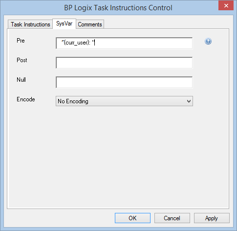
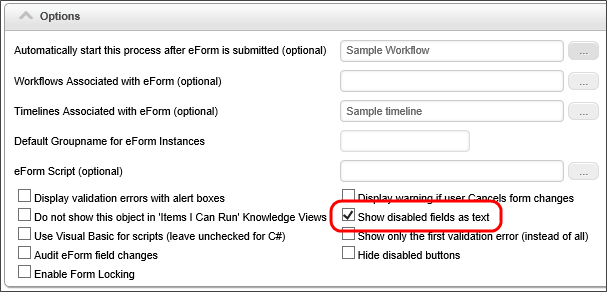
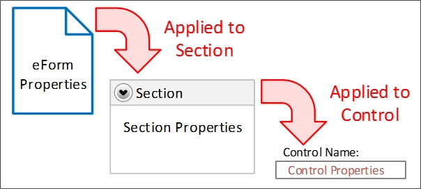
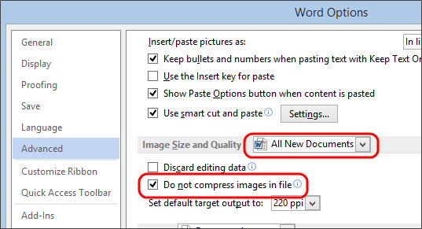

There are a number of Best Practices that you should incorporate into your implementation projects. Following these guidelines will make your implementations work more smoothly, be easier to maintain, and will enable you to make necessary changes more quickly, as personnel or processes change and evolve. In addition to these best practices, you should also familiarize yourself with the basic design concepts that are explained in the Getting Started Guide.
When you delete a form instance, ensure that you delete the corresponding workflow/timeline instance as well.
Always attach objects as Workflow references instead of form references, except in those cases where a form-specific attachment is required. Always use a Group Name for attachments. The Group Name is the only reliable handle we have for selecting attached objects.
As a general rule, you should create only one data source per database back end, and reuse that Datasource for all relevant implementation projects. Only create multiple data sources when a) you are pointing to two or more databases, or b) You want to specifically restrict a data source to specific objects. For example, you might create a Datasource with a smaller subset of tables for use in a specific project, to ensure a class of users don't have access to more sensitive tables that might be included in the main Datasource.
Organize data sources in root folders of the partition, separate from any implementation folders, so that implementers don't have to export data sources when the implementation is exported from development to production. Exports and Imports are name-based, and relative folder position-based. Consequently, the root folder containing database sources should be mirrored on development and production servers, so that both the names and relative folder positions are exactly the same in both environments. If the mirroring is correct, implementations will be imported/exported between development and production without losing contact with the data sources.
When creating conditions that require a specific value, use the "equals" (=) condition rather than the "contains" condition when possible Only use 'contains' when a null value is desired as a return proxy for "show me everything" When building conditions testing matching strings, think hard about when to use “=” versus “contains”. Note that if the right hand side of the condition is blank, then “contains” will match all strings, whereas “=” will match none. Keep in mind that if you are building a condition, for example, testing the result of a Process Timeline activity, and the result might be “Accept” or “Do Not Accept”, then using a condition like “contains ‘accept’” will match either result—probably not what you intended. So it’s also a good idea to avoid results that are substrings of one another, like "Approve" and "Disapprove".
In field properties for objects like Workflow steps and Process Timeline activities, enter actual instructions in the Instructions field, and descriptions into the Description field.
If you are using the Word Form Builder, Microsoft Word will sometimes put corrupted data into the template document that will cause the upload of the Form template to crash. Open the bad .doc file and do a “Select All” (CTRL + A) and “Copy” (CTRL + C) the data, then “Paste” (CTRL + V) it into a new document and save it. Use the new template to upload.
As a guideline, use fewer email templates by using conditional sections and multiple email data controls, when applicable.
Use system variables to display step names, instructions, and descriptions, rather than hard-coding them in the body of the email, so that little customization has to be done to the email template.
Configure a default email template in the Workflow/Timeline definition, so that you can override it and create custom email templates if a particular activity requires it.
When developing, use real users as assignees for Workflow tasks or Timeline activities. In testing, use impersonation to perform the assignees' tasks. Do not assign tasks to yourself, as you need to see the process as the actual assignees will see the process.
In field properties for objects like Workflow steps and Process Timeline activities, enter actual instructions in the Instructions field, and descriptions into the Description field. (Remember, somebody else might be modifying this project after you—help them out!)
When you delete a form instance, ensure that you delete the corresponding Workflow/Timeline instance and vice versa. Failure to do leaves orphaned objects in Process Director, i.e., Form instances without their Timelines. All related instance objects need to be deleted together.
You should not ever perform testing in the production environment, except is unusual circumstances. Production systems should be rigorously tested in the development environment, and imported to Production.
Use meaningful instance names for each form definition. The default names are too generic. By the same token, use simple, meaningful names for object and field definitions. Do not use Hungarian notation or other programming-style conventions. Names should be logical and recognizable. This is very helpful when the objects are used in other places, such as when defining conditions. Object names will appear sorted alphabetically.
Instructions should tell users to do something. For example, “Please review this form and approve or reject it using the buttons below”. Note that it’s nice to begin instructions with “please”. Descriptions should explain something. Always use friendly names for form fields that are required, have validation rules associated with them, or may be used in knowledge views, so that Knowledge Views and other derived uses of the field display human-friendly field names. Keep in mind that Knowledge View column titles will use the friendly name, so brevity is important, as a friendly name like "This is the name of the user who filled out this form" might not be the best choice.
Always add the assigned user and task instructions at the top of forms and email templates. In a task context; the easiest way to be sure of that is to use the Task Instructions System Variable control, which only appears in that context. You can append the task user's name to the control by typing ”{curr_user}: “ in the Pre field of the control's properties, as shown below.

As a guideline, on each Form template, there should be three standard fields: the form submitter, submission date, and sequence number. The three fields should be disabled for all users. In some cases, the submitter may be submitting on behalf of another user: those fields should be separate, so that the submitter is always automatically set (usually by setting its default value to FORM SUBMITTER), and the on-behalf-of user can be selected by the submitter using a user picker or other mechanism.
When possible, choose the Show disabled fields as text option in the Form definition, which will render disabled fields as plain text, rather than disabled controls.

Form control appearance logic can be complicated. The following rules should apply:
Appearance logic is strongly driven by inheritance. Inheritance is the ability of a container control to automatically incorporate, or inherit, properties of its parent container control. In the case of Form controls, for example, the "required" and "enabled" properties are inherited. The Form is the highest-level container control, and every control on the form is a child control of the Form. A Section control placed onto a Form will inherit the properties of the Form, while an individual control placed inside of a Section control will, in turn, inherit the section's properties.

For example, if the Required property of a Section control is set to "true", then inheritance ensures that all of the controls contained in that section will be required. You can override inheritance, however, by explicitly setting the Required property of a control inside the section to "False". If there is conflict between the Required property of a container control, and the controls contained inside it, the control property at the lowest level wins, and overrides the inheritance.
With the "lowest level wins" model of inheritance in mind:
When creating tables in the Word Form Builder, a number of practices are advisable to ensure the table displays correctly when translated into HTML for display in Process Director:
Label control values do not get saved to the database; therefore, labels should be used only to show text on forms. Label controls are display vehicles only; don’t try to use them in conditions, for example. When possible, associate each label with an Input control for ADA (Section 508) compliance.
Hide debug sections and other development conventions in forms from the non-developer form users. Users should never see anything on a form that is not relevant to the process on which they are working.
Routing slips should appear below any user action buttons so that users do not have to scroll below the routing slip to perform their assigned task.
Use the branch/result order properties to ensure that options are presented consistently to users throughout a process. approvals are always displayed first in the button areas.
When adding multiple spaces in the Word Form Builder, you may find that only one of the spaces is rendered into the HTML document. To add multiple spaces, you have to use non-breakable spaces. You can add a non-breakable space by pressing [CTRL]+[SHIFT]+[SPACE]. On a Macintosh computer, you can add a non-breakable space by pressing [ALT]+[SPACE].
It is common to insert images, like corporate logos, into a Form Template. By default, Microsoft Word will attempt to compress the image to reduce the file size; however, this also degrades the quality of the image. To turn off this default image compression when using the Word Form Builder, click on the File tab in Microsoft Word, and select Options to open the Options dialog box. In the Options dialog box, select Advanced from the navigation bar on the left side of the dialog box, then on the right side of the dialog box, scroll down to the Image Size and Quality section. Set the Image Size and Quality drop down to "All New Documents", then check the option labeled "Do not compress images in file". Finally, click the OK button to save your settings changes and close the dialog box.

With image compression turned off, your images should display with higher quality.
Sequence numbers should always be formatted as text, and should always use the "digits" formatter. There are a couple of reasons for this.
First, there's a general rule that, if you are not going to do math on a data item, it's not actually a number, even if all of the characters are numeric. This is why zip codes, or social security numbers are always formatted as text. Additionally, if a data item is formatted as a number, then you cannot use the "Contains" operator in the Condition Builder, and can only use the "=" operator. This limitation can be troublesome, because if you leave the value blank in, say, a Knowledge View filter condition that uses the "=" operator, Process Director returns no results, but leaving a "contains" condition blank returns all results. Most of the time, you want to return all results as a default, and then allow the user to filter the results to a smaller set by entering a value for the sequence number, which requires using the "contains" operator in the filter.
Formatting the sequence number as text, of course, changes the way sorting works. A numeric field is sorted in numerical order, while a text field is sorted alphabetically, so the same set of sequence numbers will be sorted in different order, depending on whether they are text or numeric data.
| NUMERIC SORTING | ALPHABETIC SORTING |
|---|---|
| 1 | 1 |
| 2 | 100 |
| 11 | 11 |
| 21 | 2 |
| 100 | 21 |
This is where the "digits" formatter for the sequence number comes in. If you set the digits formatter to "digits=4", the sequence number will always be a fixed length of four digits, and will use leading zeros for smaller numbers, so that sequence number "1" will be stored as "0001". Adding the leading zeros will fix the Alphabetic sorting issue, so that you can sort by the sequence number in the expected order, e.g., 0001, 0002, 0011, 0021, 0100.
In general, you should always return Form Instances with Knowledge Views unless you have a specific reason to return other objects such as Attachments, Timeline Instances, etc. This is especially true if you are creating filters that use the value of some form field for filtering. Returning, say, Timeline Instances will cause your filter criterion to fail, whereas form field filters will work as expected when returning Form Instances.
For the purposes of this discussion, we'll refer to Business Rules, Business Values, and Goals collectively as "value objects", since they primarily return a value or values. These value objects occupy a slightly different space than other Process Director objects. Most objects, like Forms or Timelines, are tied to a specific implementation project. Conversely, value objects are often not tied to a specific project at all. For instance, a Business Value that extracts some data from an external ERP or CRM system may be widely used across a number of projects. Similarly, a Goal that specifies some universal system state may be used by all projects. This raises the question of where the value objects should be placed in the Content List, and when—or if-—they should be exported/imported between development and production systems.
You may wish to consider whether to create a folder at the root level of the content list to store value objects that are used by multiple projects, while storing project-centric objects within the relevant project folders. It's often quite easy to determine whether an object is project-centric or not: If you need someone else's permission or agreement to change or delete an object, it is most likely not a project-centric object, and may be a candidate for storage in a central location in the Content List, separate from any specific implementation project.
Indeed, you might wish to consider this method of centralizing storage for some other objects, as well. For instance, there's no reason to have a dropdown object that lists the names of US states replicated in multiple projects. It's a very static dropdown object that may be used in any project, so it, along with the value objects, is a good candidate for storing in a central location.